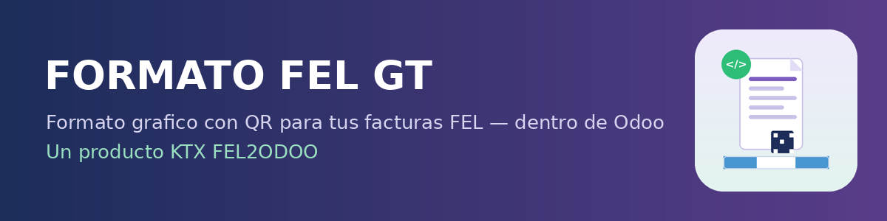

El XML que certifica la SAT no es legible para tus clientes. Formato FEL GT convierte ese XML (el mismo con el que se creo la factura, venga de Importacion Masiva o de FEL2Odoo) en un PDF con formato de factura profesional — con codigo QR de verificacion de la SAT — sin subir nada a ningun sitio externo.
"Imprimir FEL con Formato" aparece en la factura de venta, listo para descargar el PDF con un clic.
El QR enlaza al Verificador Integrado oficial de la SAT (felpub.c.sat.gob.gt), igual que en el documento original.
Se activa desde Contabilidad > Configuracion > Ajustes. No aparece nada hasta que lo enciendes.
Emisor, receptor, items, impuestos, totales, UUID, serie, numero y fecha de certificacion — igual que una factura completa.
Cada PDF generado queda visible y descargable en el historial de la factura, sin perderlo nunca.
Funciona con el XML de cualquier origen: Importacion Masiva XML-SAT o FEL2Odoo. Independiente y sin conflictos.
Enciende la opcion en Contabilidad > Configuracion.
En la factura, pulsa "Imprimir FEL con Formato".
Descarga el PDF y queda adjunto en el chatter.
Arquitectura limpia, facil de migrar.
QR del verificador oficial de la SAT.
Sin dependencias duras de otros modulos.
No interfiere con modulos nativos ni con otros certificadores.
Precio especial por tiempo limitado. Una sola compra, uso de por vida en tu instancia.
Sin subir tu XML a ningun sitio externo. Compatible con Odoo 19 (Community y Enterprise). Hecho en Guatemala, para la contabilidad guatemalteca.
FEL2ODOO — Formato FEL GT — por KTX APPS — NIT 93823509
Guatemala FEL • Odoo 19 • Compania KTX FEL2ODOO
Contenido generado con ayuda de IA, con estricta planificacion y gestion de KTX.